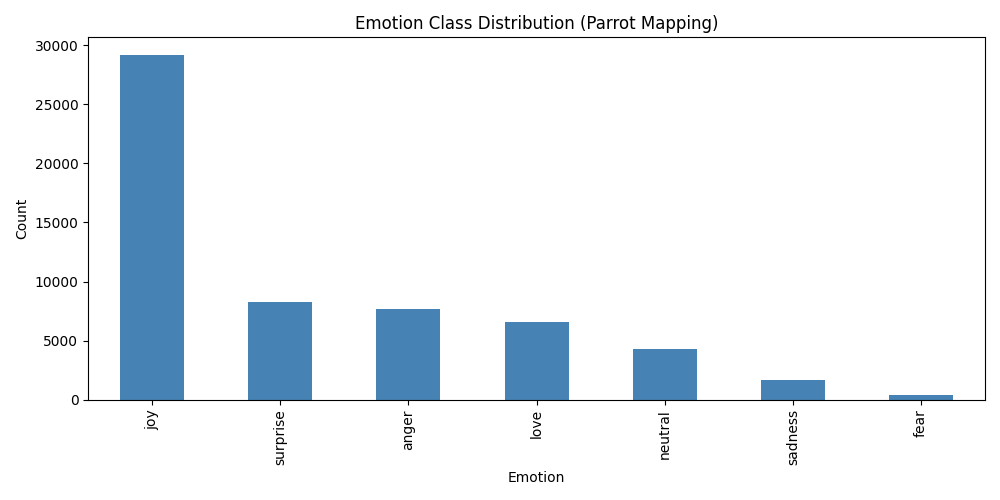
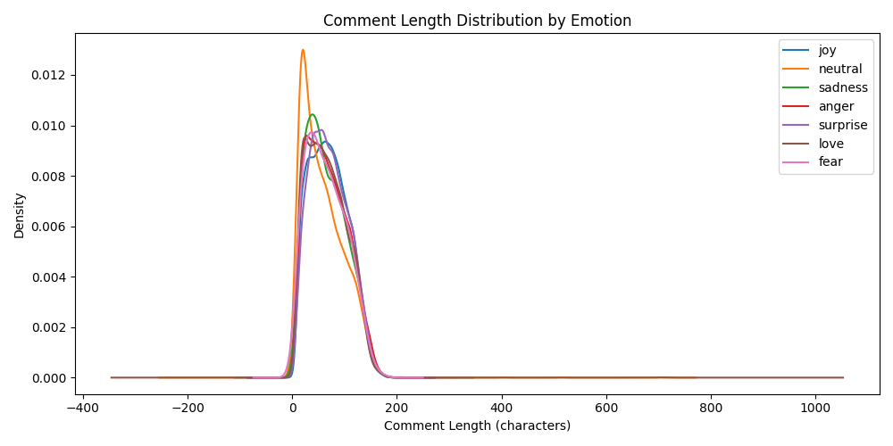
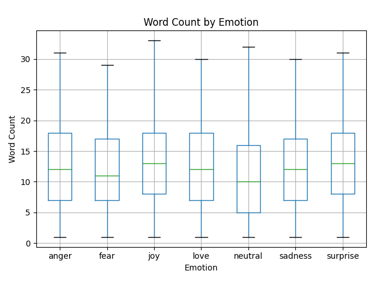
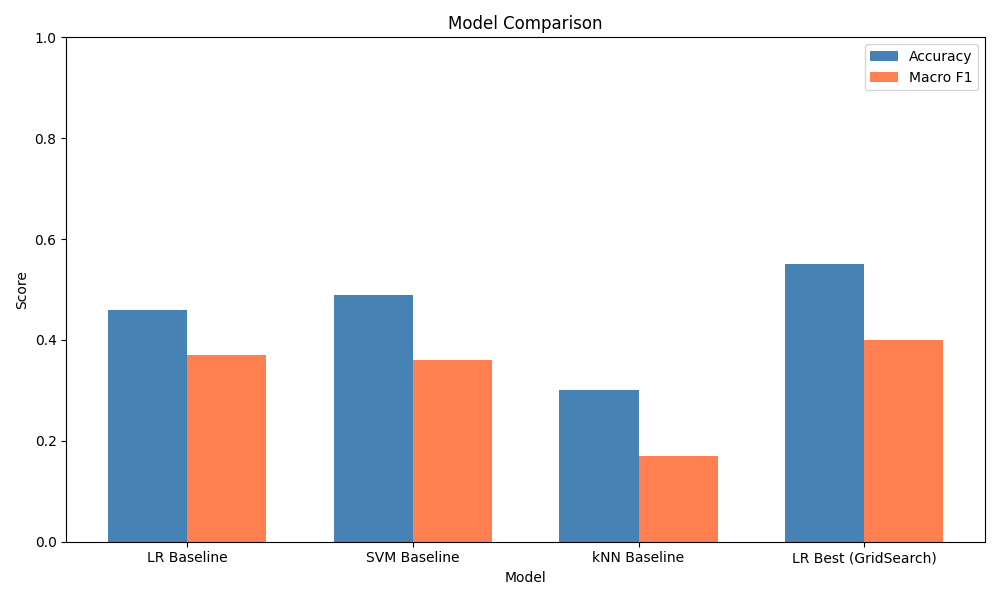
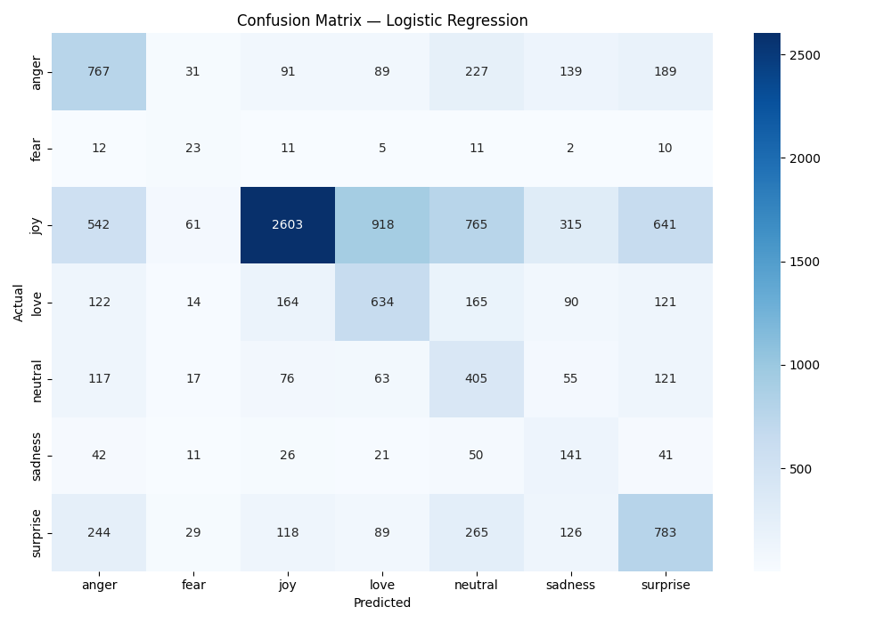
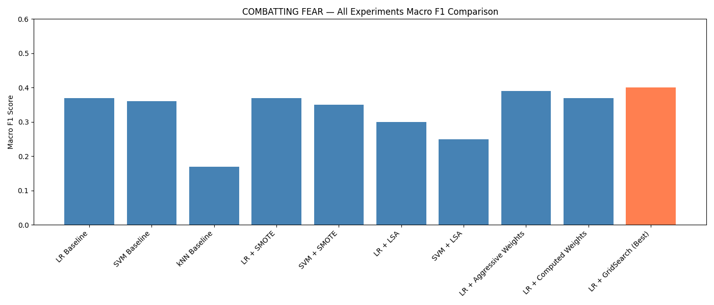
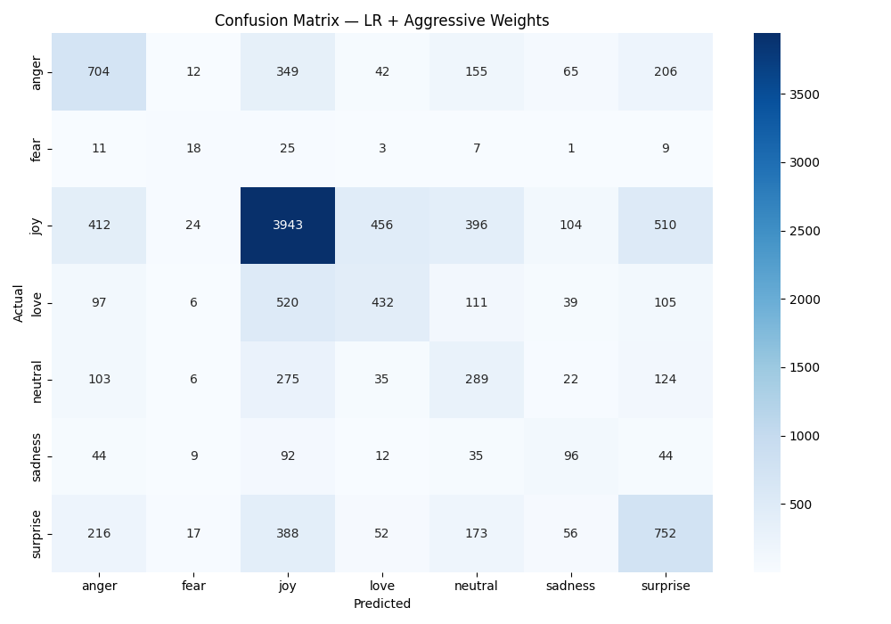
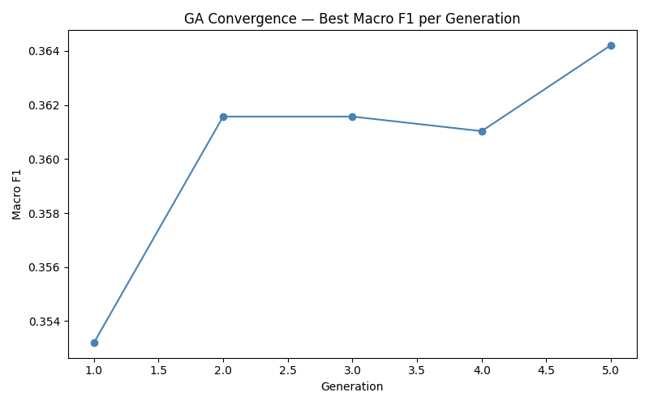

Classifying Reddit comments into 7 human emotions using traditional machine learning, mapped to Parrot's emotion framework — and pushing the limits of minority class detection.
We use the GoEmotions dataset by Google Research (Demszky et al., ACL 2020) — 58,011 Reddit comments annotated across 27 fine-grained emotion categories by multiple raters. We aggregate by comment ID (majority vote) and collapse the 27 labels into 7 primary classes using Parrot's emotion framework (W. Gerrod Parrott, 2001).
Google Research · GoEmotions · ACL 2020
HuggingFace ↗
211,225 annotations
58,011 unique comments
27 emotion labels
58,008 comments
7 Parrot emotion classes
1 row removed (empty after cleaning)
The 27 GoEmotions labels are collapsed into 7 Parrot primary emotions:
| Parrot Class | GoEmotions Labels | Count |
|---|---|---|
| 😄 Joy | joy, amusement, excitement, optimism, pride, relief, gratitude, approval | 29,222 |
| ❤️ Love | love, admiration, caring, desire | 6,552 |
| 😮 Surprise | surprise, realization, confusion, curiosity | 8,272 |
| 😡 Anger | anger, annoyance, disapproval, disgust, embarrassment | 7,663 |
| 😢 Sadness | sadness, disappointment, grief, remorse | 1,660 |
| 😨 Fear | fear, nervousness | 371 |
| 😐 Neutral | neutral | 4,268 |
A three-script pipeline transforms raw GoEmotions data into a clean, model-ready dataset.
comment_length (character count) and word_count columns for EDA and surface-feature analysis.58,008 rows × 4 columnstext, parrot_label, comment_length, word_count
68.5 characters average length
12.9 words average word count
Finding: Neutral comments are significantly shorter than emotional ones (avg 58.8 chars vs ~68 chars). However, word count distributions overlap heavily across all 7 emotion classes — surface features alone cannot separate emotions.



| Emotion | Count | Avg Length (chars) | Avg Words |
|---|---|---|---|
| 😡 Anger | 7,663 | 67.99 | 12.56 |
| 😨 Fear | 371 | 65.46 | 12.15 |
| 😄 Joy | 29,222 | 70.09 | 13.26 |
| ❤️ Love | 6,552 | 66.42 | 12.59 |
| 😐 Neutral | 4,268 | 58.77 | 10.93 |
| 😢 Sadness | 1,660 | 65.47 | 12.34 |
| 😮 Surprise | 8,272 | 70.74 | 13.28 |
All models use TF-IDF features (max_features=10,000, ngram_range=(1,2)) on an 80/20 stratified train/test split with random_state=42.
| Model | Accuracy | Macro F1 | Notes |
|---|---|---|---|
| Logistic Regression | 0.46 | 0.37 | class_weight='balanced' |
| Linear SVM | 0.49 | 0.36 | class_weight='balanced' |
| kNN (k=5) | 0.30 | 0.17 | No class weighting |
| 🏆 LR + GridSearch | 0.55 | 0.40 | C=0.5, custom weights |


With only 371 Fear samples (~0.6% of data), we ran 8 experiments beyond the baseline to mitigate this imbalance:
Synthetic oversampling — generated synthetic Fear samples to balance all 7 classes to 23,377 each. Result: No meaningful improvement. SMOTE on sparse TF-IDF vectors creates synthetic samples in meaningless sparse space.
Reduced 10,000 TF-IDF features to 300 dense components. Result: Worse overall. Fear recall improved slightly but precision collapsed to 0.02 — model predicted fear everywhere.
Manually set Fear weight=20, Sadness=5, Joy=1. Result: Best so far (F1=0.39). Forces the model to penalize Fear misclassification 20× more.
Searched C ∈ {0.1,0.5,1,5,10} × class_weight options. Best: C=0.5 + aggressive weights → Macro F1 = 0.40.
GA with 10 individuals × 5 generations evolved 7 class weights simultaneously. Result: F1=0.38. Found non-intuitive weights (Neutral=23.2) but didn't beat GridSearch — limited by generations.



| Experiment | Macro F1 | Fear F1 |
|---|---|---|
| LR Baseline | 0.37 | 0.18 |
| LR + SMOTE | 0.37 | 0.17 |
| LR + LSA | 0.30 | 0.04 |
| LR + Aggressive Weights | 0.39 | 0.22 |
| LR + GA | 0.38 | 0.22 |
| 🏆 LR + GridSearch (C=0.5) | 0.40 | 0.24 |
Neutral comments are notably shorter but word count distributions overlap heavily across all emotion classes. Surface-level features alone cannot separate emotions — lexical content is the necessary signal.
LR consistently outperforms SVM and kNN on Macro F1. kNN fails due to the curse of dimensionality in sparse TF-IDF space. LR's linear boundary is well-suited for high-dimensional sparse text features.
SMOTE and LSA did not meaningfully improve minority class performance, suggesting TF-IDF features are the bottleneck, not the class distribution. Manual class weights + GridSearch proved most effective.
The best model — Logistic Regression with C=0.5 and manually-tuned aggressive class weights, optimized via GridSearchCV — achieves a Macro F1 of 0.40 and accuracy of 0.55. Fear detection improved from F1=0.18 (baseline) to F1=0.24 (best). While this represents meaningful progress, Fear (371 samples) remains the hardest class — an honest reflection of how rarely fear is expressed in Reddit comments relative to joy or anger.
Interestingly, even a Genetic Algorithm with evolved class weights could not outperform carefully-tuned manual weights, likely due to the limited number of generations (5) constrained by computational time. A full GA run with 50+ generations may yield better results.
Every figure on this site is generated by a script. Nothing is manually edited. All paths are relative to the repository root.
| Script | Produces |
|---|---|
| 01_load_data.py | data/raw/go_emotions_raw.csv |
| 02_preprocess_data.py | data/processed/combined_dataset.csv |
| 03_basic_eda.py | visuals/01–03 + label summary table |
| 04_model.py | visuals/04–08 (confusion matrices + comparison) |
| 05_imbalance_experiments.py | visuals/09–14 (all experiments) |
| 06_genetic_algorithm.py | visuals/15–16 (GA confusion + convergence) |